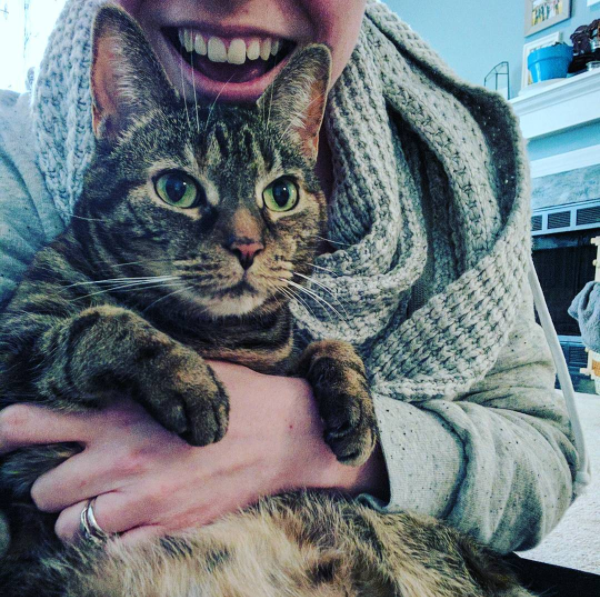

About Me

Hello! I live in Durham with my husband Joe, our cat Miri (she's named after a character/episode of Star Trek! I really like Star Trek!), and our dog Max (he's sort of named for both Maximus Decimus Meridius from Gladiator and Mad Max, but also it's a pretty classic dog name and he just kind of looks like a Max anyway).
I graduated from UNC in 2011 and I've been living in the triangle ever since (aside from a brief stint in London, and the few months before and after London when I was poor/jobless and moved back in with my mom for a bit). I grew up in Louisburg, North Carolina, which is being gradually subsumed into the Triangle region anyway, so this area has been near and dear, both geographically and sentimentally, my whole life.
My degree is in Studio Art, but I actually prefer design. I didn't really comprehend the difference until too late in college, but it all worked out, because once I started building my portfolio website, I discovered that design wasn't my thing either — coding is! Coding is fun for me because I get to be creative aesthetically and also intellectually. My brain is grateful for the exercise!